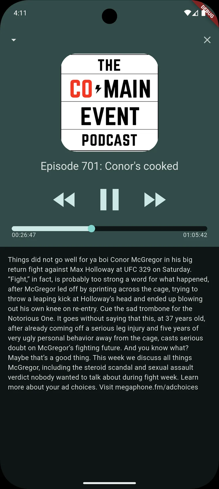
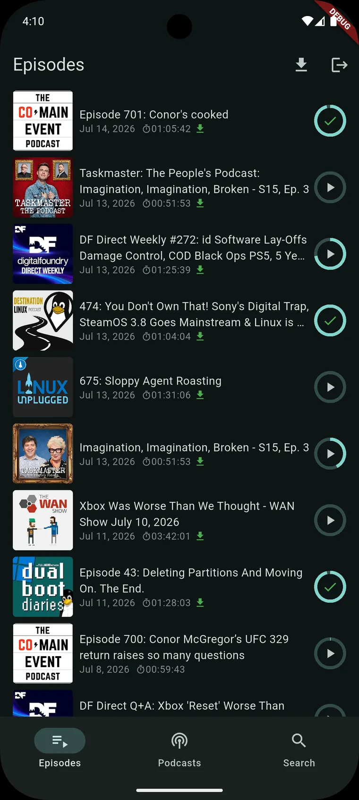
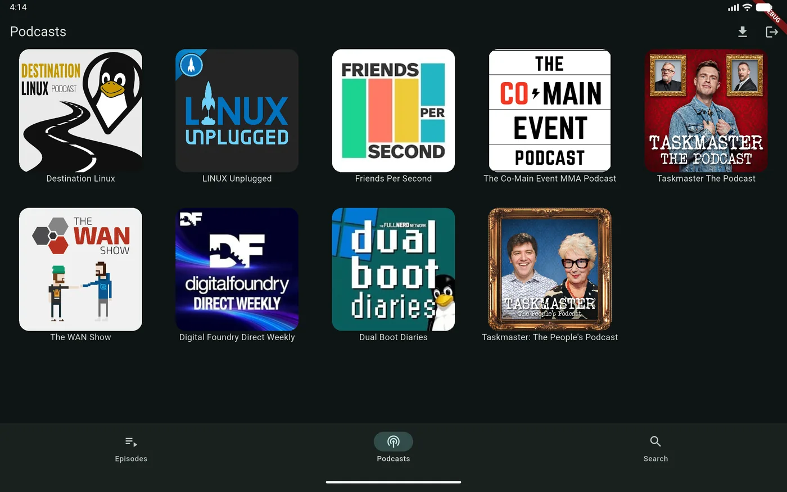
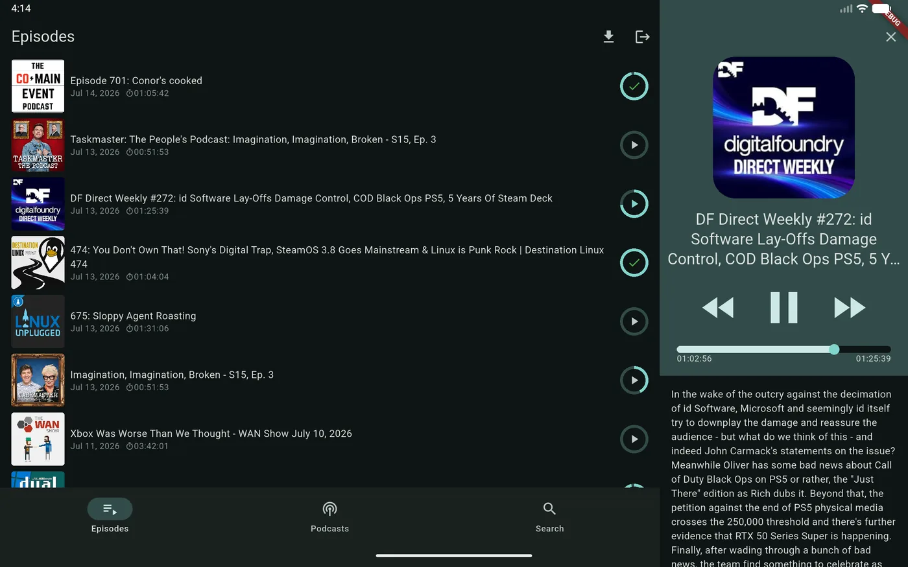

SELF-HOSTED PODCAST CLIENT
Your podcasts.
Your server.
Podku is a fast, no-nonsense client for your own Podku podcast server. Subscribe, stream, and sync — all running on infrastructure you control, not someone else's cloud.

IN USE
Built to get out of your way
One episode list, a real player, and a library view that scales from a phone in your pocket to a tablet on your desk.



WHY PODKU
Simple and fast, on purpose
No accounts to create, no ads, no third-party analytics. Podku talks only to the server you point it at.
Fast by default
Instant playback and smooth scrolling through thousands of episodes, even on modest hardware.
Own your library
Subscriptions, play state, and downloads live on your server — not in a company's database.
Real background playback
Full media notifications and lock-screen controls that behave like a proper podcast app, not a player bolted onto a browser tab.
Throw playback to another device
With Podkunnect, start an episode on your phone and send playback to a speaker or box elsewhere in the house — the same idea as Spotify Connect. A companion CLI lets it run unattended on a headless server or a small always-on box.
Search inside every episode
Turn on optional transcription and Podku can search what was actually said, not just titles and descriptions — so a search for a phrase can surface the exact episode it was mentioned in.
Free and open source
Podku is GPL-3.0 licensed. Read the code, self-host it, change what you don't like.
UNDER THE HOOD
How the pieces fit together
Podku is two projects working as one: a client you install, and a server you run.
The app never talks to podcast hosts directly — your server handles fetching, proxying, and storage.
Run your own, or just try the app
Set up the server from source, then connect the client and start listening.